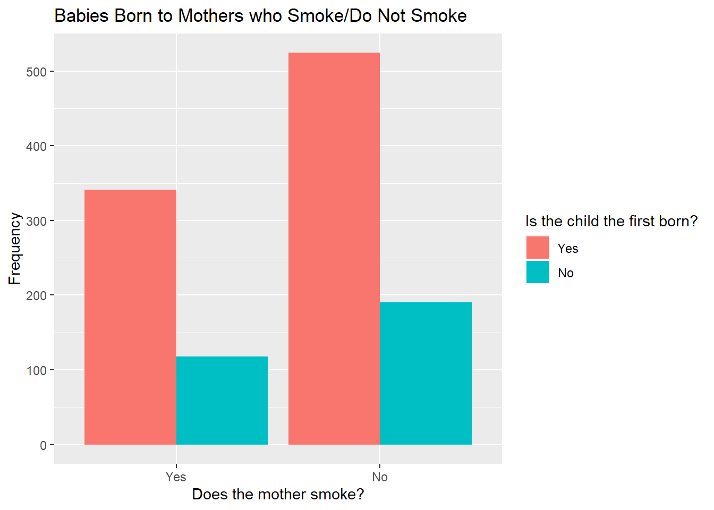
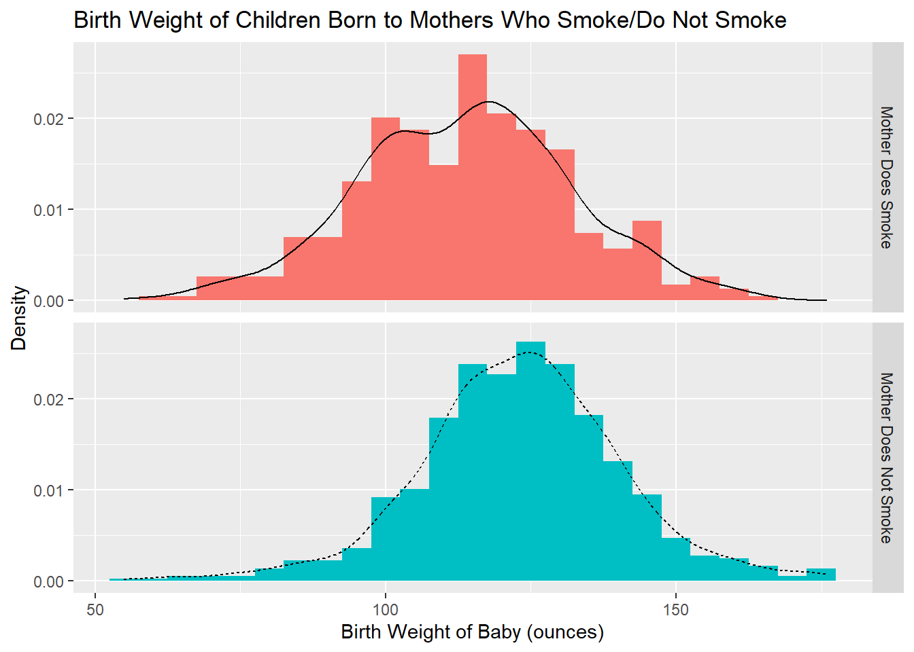

5 Further Exercises
Exercise 1
The data set VIT2005 from the PASWR2 package stores information relating to 218 different apartments in Vitoria, Spain. For a full list of the variables included and the information they represent, use the code help(VIT2005).
You can load VIT2005 into your Environment tab using the following code.
library(PASWR2)
data("VIT2005")The variable "out" details how much of an apartment is exposed to the elements. It has levels "E25", "E50", "E75" and "E100" corresponding to 25%, 50%, 75% and 100% exposure respectively.
Create a frequency table, a pie chart and a barplot in base R which show the number of apartments from
VIT2005within each category of the "out" variable.You may wish to relabel and reorder the categories of "out" first of all.
The variable "area" is a numeric variable detailing the size (in square metres) of each apartment.
Create a new categorical variable, called "size", indicating whether an apartment is considered "Small", "Medium" or "Large". Apartments smaller than 100m2 should be labelled as small, those between 100m2 and 150m2 should be labelled as medium and any apartments larger than 150m2 should be labelled as large.
The function
cut()will be useful for this.Using this new categorical variable, create a barplot in base R to investigate whether the proportion of apartments in each level of exposure is different for small, medium and large apartments.
Make sure that apartment size is placed along the x-axis, there is a different bar for each level of exposure and that the y-axis shows proportion, not frequency.
"totalprice" gives the market price (in Euros) for each apartment.
Create a histogram in base R showing the shape of the distribution of apartment prices. Superimpose a kernel density estimate of the distribution on the histogram.
Investigate whether the distribution of apartment price is normal using a QQ plot. Do you think this is a normal distribution?
Use three histograms to compare the distributions of apartment prices for small, medium and large apartments. Make sure you are using the same
breaks =and range along the y-axes in all plots so that the distributions can be easily compared.What differences are there between these distributions?
Remember to subset the data first so that the first plot is only for prices of small apartments etc.
Exercise 2
The file "babies.csv" contains data on the birth weight of babies born to different mothers and whether each mother currently smokes or does not smoke (a full list of the variables included in this data set can be found here).
Download the data from Moodle and load the data set into your Enivronment tab using the code below and use babies to recreate the following two plots using ggplot2.
babies <- read.csv(file = "babies.csv")
